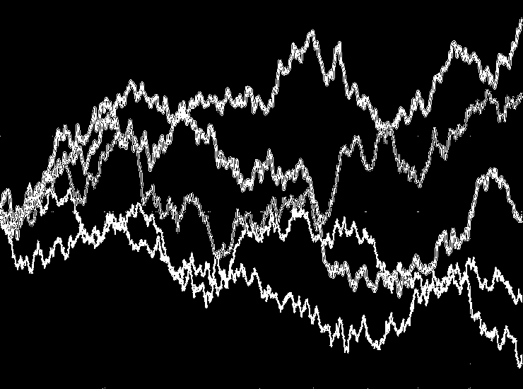
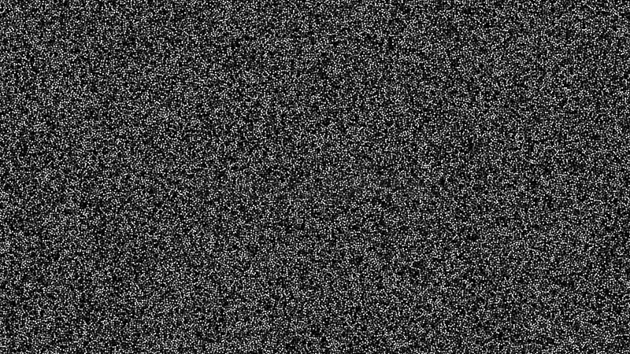

24–28 Aug · 2026
Summer Symposium on Stochastic Systems 2026
Co-organizer · Beijing Institute of Technology, Beijing, China


For details about the talks and conferences I have participated in, both past and upcoming, please see below
For information about the seminar schedule at the Department of Mathematics and Statistics, Beijing Institute of Technology (BIT), please see here: BIT seminar
Co-organizer · Beijing Institute of Technology, Beijing, China
With Zimo Hao, Zhenyao Sun, Xicheng Zhang & Rongchan Zhu · BIT, Beijing
With Xicheng Zhang, Xiangchan Zhu & Rongchan Zhu · Beijing
With Oana Pocovnicu, Leonardo Tolomeo & Younes Zine · Maxwell Institute